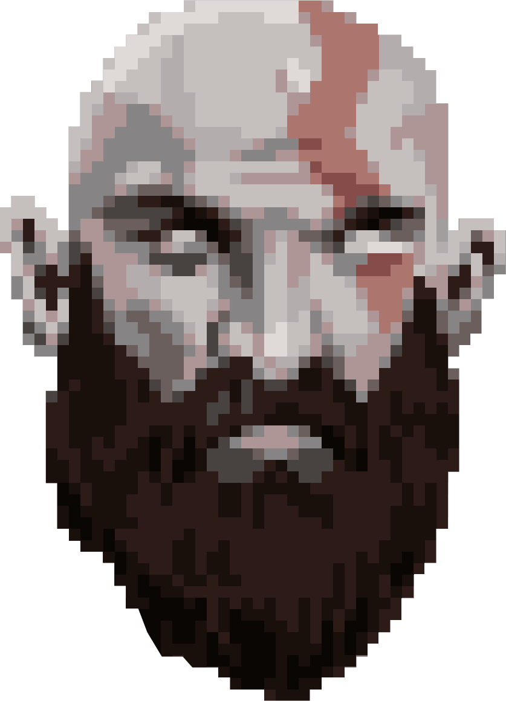

Pixel art uses the aesthetic and properties of 8-bit and 16-bit graphics to create worlds, characters, and ultimately, full games. Artists and developers often use the process of ‘spriting’, which involves forming your creation out of pixels. Game sprites are what fueled gaming and have seen a resurgence in recent years.
Stardew Valley and Kynseed, both life simulators, involve impressive pixel art graphics inhabiting every aspect of their game worlds.
From the dirt, the plants, to the minor creatures lurking in the bushes, pixel art propels the game forward, enriching the players’ experience.
There are few examples of pixel art games in the left column.
Pixel art in and of itself is a digital art form that allows the artist or user to create a wide array of different assets for a game. Pixel art can be found as far back as the oldest arcade games, like Space Invaders. The pixel art was what made those games unique and they just worked.
Before, I mentioned Final Fantasy Tactics. This game was stunning, in that it blended pixel art, 3D environments, and isometric camera views. But pixel art isn’t relegated to the 1980s and 1990s. Specifically, the game Enter the Gungeon has taken pixel art to the next level. Filled with fast-paced gunplay and colorful characters, Enter the Gungeon blends pixel art with great animation and graphic rendering.
How do you go about creating your pixel art for a game?
Before you even develop a game using pixel art, you need to create the objects, characters, and story elements that will populate your world, giving your game the framework it needs to move forward in the creation process.
- Timeless
- Dedicated Community
- Difficulty Standing Out This is a tough one. Back to my mentioning of Enter the Gungeon, the thing that made that game an instant classic was its uniqueness. There is nothing like it out there. Nothing like it has been tried before. A run and gun, shoot ’em up game where the gameplay is frantic, hectic, and downright insane. The problem that many developers will have is trying to get your creation to stand out. Not saying that you can’t develop something groundbreaking, but chances are your first effort will be more of an experiment to cut your teeth on, rather than a triple-A masterpiece.
Luckily, games with the retro look to them hold up pretty well. You could easily hook up a SNES and play several games, (like Earthbound), and feel like it was made today. This is a breath of fresh air. If you were to boot up some games from the original PlayStation or Xbox, I guarantee that the visuals will sometimes make you cringe with how poorly they have aged.
The pixel art community is alive and well. Not only that, but they are extremely passionate. Ranging from hobbyists to more serious game developers, pixel artists have countless online forums and programs in which to bounce ideas off of each other, help one another, and engage with other artists’ work.